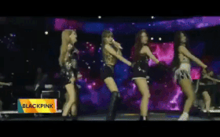

Kpop Gen 2 và 3 từng có thời đấu nhau cực “gắt”: BIGBANG và EXO đối đầu gay cấn, từ tân binh đến nhóm lão làng cứ comeback là có hit

Tròn 1 năm BLACKPINK diễn ở Coachella nhưng fan nhớ nhất là cảnh 3 cô chị… đầu tóc rũ rượi, riêng tóc mái của Lisa vẫn “bất di bất dịch”
Tiết lộ tập nhảy từ năm 4 tuổi, Lisa (BLACKPINK) gián tiếp “dằn mặt” antifan đánh giá thấp khả năng huấn luyện vũ đạo của mình